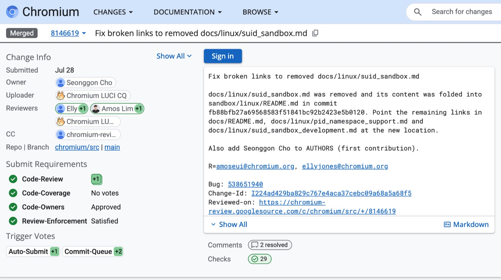
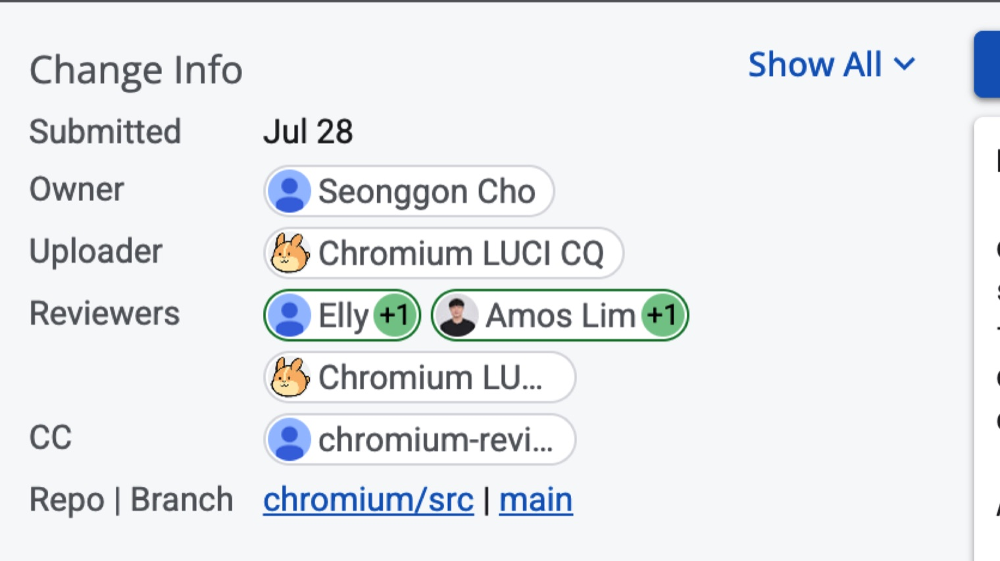

문서 목록
리뷰 받기
업로드한 CL은 아직 리뷰어에게 보이지 않습니다. Gerrit에서 Start Review를 눌러야 리뷰가 시작되고, 커미터 두 명이 +1을 준 뒤 커미터가 Commit-Queue +2를 걸면 봇이 머지합니다.
Gerrit에서 할 일#
- 로그인한 브라우저로 CL을 엽니다. Files 탭에서 바뀐 파일이 의도한 것뿐인지 봅니다.
- Start Review 버튼을 누르고 Reviewers에 카드에 적힌 리뷰어 2명을 넣습니다. 메시지에는 무엇을 고쳤는지와, 승인되면 CQ+2를 걸어 달라는 부탁을 적습니다. 참가자는 CQ를 걸 수 없기 때문입니다. 예: "Fixes a broken link in docs/linux/dependencies.md. This is my first contribution and I don't have CQ access, so could you Submit to CQ once it's approved?"
- Send and Start Review를 누릅니다. 이 버튼을 눌러야 리뷰어가 봅니다.
리뷰어는 멘토와 같이 정합니다. 한 리뷰어에게 CL이 몰리면 카드의 다른 후보로 바꿉니다.

누가 무엇을 누르나#
참가자는 올리고 답하는 데까지 합니다. 승인과 머지 버튼은 커미터만 누를 수 있습니다.
| 할 일 | 누가 | 메모 |
|---|---|---|
| 업로드, Start Review, 코멘트 답 | 참가자 | |
| Code-Review +1 두 개 | 커미터 두 명 | 커미터가 아닌 사람의 CL은 +1이 두 개 있어야 합니다 |
| OWNERS 승인 | 커미터 누구나 | docs/와 AUTHORS는 OWNERS가 *라서 위의 +1이 그대로 승인이 됩니다 |
| Commit-Queue +2 | 커미터인 리뷰어. 보통 두 번째 +1을 주는 사람 | 참가자와 멘토는 커미터가 아니라서 걸 수 없습니다. 참가자가 누르면 봇이 the user is not a committer로 거절하고, +1이 두 개 모이기 전에 걸면 Review-Enforcement로 거절합니다 |
| 검사와 머지 | 봇(CQ) | 문서만 바꾼 CL은 presubmit 검사 두 개만 돕니다. 사람이 머지 버튼을 누르지 않습니다 |
+1 두 개와 OWNERS 승인이 차면 Gerrit이 CL에 Ready to submit을 띄웁니다. 누르는 단계가 아니라 표시이고, 그 뒤에 커미터가 Submit to CQ(Commit-Queue +2)를 누릅니다.
근거는 Chromium의 리뷰 규칙과 기여 안내입니다. 올해 머지된 OSSCA 문서 CL 27건도 전부 커미터가 Commit-Queue +2를 걸었습니다.

행사 뒤 리뷰 대응#
- 리뷰 알림은 Gerrit 메일로 옵니다. 스팸함도 확인하세요. 미국 리뷰어는 월~금 태평양 시간에 일해서 한국 시간으로 화~토 새벽이나 오전에 답이 옵니다.
- 코멘트마다 Reply로 답합니다. 반영했으면 Done을 체크하고, 위쪽 Reply에서 한 번에 Send합니다. 사람이 단 댓글에는 본인이 답합니다.
- 수정은 같은 브랜치에서 합니다. 고치고
git commit --amend,git cl upload -f -t "Address review comments"순서로 올립니다. 내용이 바뀐 새 패치셋이 올라가면 기존 +1은 무효가 되어 리뷰어가 다시 눌러야 합니다. 커밋 메시지만 고쳤거나 단순 rebase면 +1이 남습니다. - "Merge Conflict"가 뜨면
git fetch origin main && git rebase origin/main으로 충돌을 해결하고git cl upload -f -t "Rebase"로 올립니다. 문서 한 줄이라 드뭅니다. - 영업일로 이틀이 지나도 답이 없으면 멘토에게 알려 주세요. Chromium 규칙대로 리뷰어를 한 명 더 넣고, 처음 리뷰어는 빼지 않습니다. 1주 넘게 조용하면 CL에 한 줄 남깁니다. "Gentle ping. This only fixes a broken link in docs/... Could you take a look when you have a moment?"
- 리뷰어가 다른 방향을 제안하거나 -1을 주면, 먼저 그 말이 맞는지 직접 확인합니다. 맞으면 따르고, 아니면 근거(파일 경로, 커밋)를 들어 짧게 답합니다.
- 머지되면 "Merged" 메일이 오고 chromium/src 커밋 기록에 내 이름이 남습니다. 이번 행사에서 머지된 CL은 Gerrit 해시태그 검색으로 모아 볼 수 있습니다.
행사가 끝난 뒤에도 Discord 스레드에서 멘토가 리뷰 대응을 같이 봅니다.